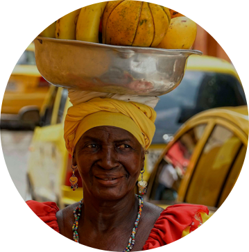
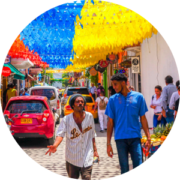

Book Your Adventure With Us!
The History of Cartagena
Cartagena’s history does not truly begin with the founding of the colonial city in 1533 as there were indigenous peoples here long before the Spanish. The people living around Cartagena belonged to the umbrella group known as Caribes, who also made up the populations of most Caribbean islands. Read More
The Culture of the Area
Cartagena —or as its inhabitants call it, ‘La Heroica’ (the Heroic City)— is known around the world as a must-go to destination in Latin America. But the city offers more than the usual touristic plans: it also shows the world the cultural diversity of its people. These are five plans one can’t miss Read More
Cuisine and Delicacies
Something unique to Cartagena is the varied gastronomy that the city offers. In this way, restaurants in Cartagena range from restaurants with international cuisine to traditional places where you can try Cartagena delicacies, such as rice with chipi chipi , pork loin in tamarind sauce and prawn cream Read More
The Best Times to Visit
See when it’s the high season in Colombia. Prices increase on the Caribbean Coast because many Colombians and Americans travel to Cartagena de Indias. It’s also the period where South American Students and Australians explore the continent with their backpacks. Read More
For Adults
Travel Option 1 - Escape the busy streets of Cartagena with a full day on the Rosario Islands. Swim and snorkel in the azure Caribbean, and relax. There are no cost surprises as the tour includes lunch, hotel pickup and drop-off, park fees, and snorkel equipment. Read More Travel Option 2 - Stray from the beaten path and see landscapes that most first-time visitors to Colombia miss and the indigenous community of Galerazamba from Cartagena. You benefit from convenient hotel pickup and drop-off and feast on an included lunch. Read More
For Families

Travel Option 1- You will take a starter’s class in drumming and dancing featuring champeta and other dances. This is a joyful experience for all ages and directly supports a talented group of young people who produce lasting change in their community through their artistic endeavors. Read More Travel Option 2 - No visit to Cartagena would be complete without a dip in the Totumo Mud Volcano, which boasts mineral-infused mud that’s said to have therapeutic properties. No need to worry about arranging transport. Read More
Testimonials and Reviews
Want to be featured? Use the hashtag #VisitCartagena! You can also email your picture to us at cadein@gmail.com and include a testimonial of your exprience!
Our tour guide, Sara, was very friendly and talkative. We enjoyed our ride to and from the volcano with her! We LOVED the mud bath and the massage was relaxing. It was a great experience all around. I highly recommend!
Got us great deals on boat rides out to Tiera Bomba, super helpful in taking our photos and just all around an amazing day. Book it!
I would do this again! The pink sea is amazing and is really pink. The mud was warm and you don’t sink at all. Weird. The man cooking food by the lake makes fresh arepas that we’re the best ever! Highly recommended